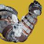

PvE 冷却
| 技能 | 图标 | 回复倍率 | 0 属性 | 10 属性 | 20 属性 | 30 属性 | 40 属性 | 50 属性 | 60 属性 | 70 属性 | 80 属性 | 90 属性 | 100 属性 |
|---|---|---|---|---|---|---|---|---|---|---|---|---|---|
| 手雷 · 猎人与泰坦 | |||||||||||||
| 闪电手雷 | 0.5× | 219.5 | 202.1 | 178.3 | 151.6 | 126.2 | 106.0 | 90.8 | 75.8 | 74.0 | 72.2 | 70.5 | |
| 烈日手雷 | 0.5× | 219.5 | 202.1 | 178.3 | 151.6 | 126.2 | 106.0 | 90.8 | 75.8 | 74.0 | 72.2 | 70.5 | |
| 涡流手雷 | 0.5× | 219.5 | 202.1 | 178.3 | 151.6 | 126.2 | 106.0 | 90.8 | 75.8 | 74.0 | 72.2 | 70.5 | |
| 量子光束 | 0.5× | 219.5 | 202.1 | 178.3 | 151.6 | 126.2 | 106.0 | 90.8 | 75.8 | 74.0 | 72.2 | 70.5 | |
| 坚不可摧 | 0.5× | 219.5 | 202.1 | 178.3 | 151.6 | 126.2 | 106.0 | 90.8 | 75.8 | 74.0 | 72.2 | 70.5 | |
| 束缚手雷 | 0.5× | 219.5 | 202.1 | 178.3 | 151.6 | 126.2 | 106.0 | 90.8 | 75.8 | 74.0 | 72.2 | 70.5 | |
| 风暴手雷 | 0.625× | 175.6 | 161.7 | 142.6 | 121.3 | 101.0 | 84.8 | 72.6 | 60.7 | 59.2 | 57.7 | 56.4 | |
| 脉冲手雷 | 0.625× | 175.6 | 161.7 | 142.6 | 121.3 | 101.0 | 84.8 | 72.6 | 60.7 | 59.2 | 57.7 | 56.4 | |
| 感应手雷 | 0.625× | 175.6 | 161.7 | 142.6 | 121.3 | 101.0 | 84.8 | 72.6 | 60.7 | 59.2 | 57.7 | 56.4 | |
| 铝热手雷 | 0.625× | 175.6 | 161.7 | 142.6 | 121.3 | 101.0 | 84.8 | 72.6 | 60.7 | 59.2 | 57.7 | 56.4 | |
| 抑制手雷 | 0.625× | 175.6 | 161.7 | 142.6 | 121.3 | 101.0 | 84.8 | 72.6 | 60.7 | 59.2 | 57.7 | 56.4 | |
| 虚空尖刺 | 0.625× | 175.6 | 161.7 | 142.6 | 121.3 | 101.0 | 84.8 | 72.6 | 60.7 | 59.2 | 57.7 | 56.4 | |
| 虚空墙壁 | 0.625× | 175.6 | 161.7 | 142.6 | 121.3 | 101.0 | 84.8 | 72.6 | 60.7 | 59.2 | 57.7 | 56.4 | |
| 急冻手雷 | 0.625× | 175.6 | 161.7 | 142.6 | 121.3 | 101.0 | 84.8 | 72.6 | 60.7 | 59.2 | 57.7 | 56.4 | |
| 冰川手雷 | 0.625× | 175.6 | 161.7 | 142.6 | 121.3 | 101.0 | 84.8 | 72.6 | 60.7 | 59.2 | 57.7 | 56.4 | |
| 线虫手雷 | 0.625× | 175.6 | 161.7 | 142.6 | 121.3 | 101.0 | 84.8 | 72.6 | 60.7 | 59.2 | 57.7 | 56.4 | |
| 电光手雷 | 0.75× | 151.5 | 139.5 | 123.1 | 104.6 | 87.1 | 73.2 | 62.7 | 52.3 | 51.0 | 49.8 | 48.6 | |
| 弹跳手雷 | 0.75× | 151.5 | 139.5 | 123.1 | 104.6 | 87.1 | 73.2 | 62.7 | 52.3 | 51.0 | 49.8 | 48.6 | |
| 燃烧手雷 | 0.75× | 151.5 | 139.5 | 123.1 | 104.6 | 87.1 | 73.2 | 62.7 | 52.3 | 51.0 | 49.8 | 48.6 | |
| 蜂群手雷 | 0.75× | 151.5 | 139.5 | 123.1 | 104.6 | 87.1 | 73.2 | 62.7 | 52.3 | 51.0 | 49.8 | 48.6 | |
| 散射手雷 | 0.75× | 151.5 | 139.5 | 123.1 | 104.6 | 87.1 | 73.2 | 62.7 | 52.3 | 51.0 | 49.8 | 48.6 | |
| 磁性手雷 | 0.75× | 151.5 | 139.5 | 123.1 | 104.6 | 87.1 | 73.2 | 62.7 | 52.3 | 51.0 | 49.8 | 48.6 | |
| 闪光手雷 | 0.875× | 131.7 | 121.3 | 107.0 | 91.0 | 75.7 | 63.6 | 54.5 | 45.5 | 44.4 | 43.3 | 42.3 | |
| 治愈手雷 | 0.875× | 131.7 | 121.3 | 107.0 | 91.0 | 75.7 | 63.6 | 54.5 | 45.5 | 44.4 | 43.3 | 42.3 | |
| 暮域手雷 | 0.875× | 131.7 | 121.3 | 107.0 | 91.0 | 75.7 | 63.6 | 54.5 | 45.5 | 44.4 | 43.3 | 42.3 | |
| 抓钩 | 0.875× | 118.7 | 109.3 | 96.4 | 82.0 | 68.3 | 57.3 | 49.1 | 41.0 | 40.0 | 39.0 | 38.1 | |
| 粘性电浆手雷 | 0.875× | 105.4 | 97.1 | 85.6 | 72.8 | 60.6 | 50.9 | 43.6 | 36.4 | 35.5 | 34.7 | 33.8 | |
| 守蛾人裹手 | 1× | 105.4 | 97.1 | 85.6 | 72.8 | 60.6 | 50.9 | 43.6 | 36.4 | 35.5 | 34.7 | 33.8 | |
| 融合手雷 | 1× | 105.4 | 97.1 | 85.6 | 72.8 | 60.6 | 50.9 | 43.6 | 36.4 | 35.5 | 34.7 | 33.8 | |
| 烈焰手雷 | 1× | 92.2 | 84.9 | 74.9 | 63.7 | 53.0 | 44.5 | 38.1 | 31.8 | 31.1 | 30.3 | 29.6 | |
| 手雷 · 术士 | |||||||||||||
| 闪电手雷 | 0.5× | 199.5 | 183.7 | 162.1 | 137.8 | 114.7 | 96.4 | 82.5 | 68.9 | 67.2 | 65.6 | 64.1 | |
| 烈日手雷 | 0.5× | 199.5 | 183.7 | 162.1 | 137.8 | 114.7 | 96.4 | 82.5 | 68.9 | 67.2 | 65.6 | 64.1 | |
| 涡流手雷 | 0.5× | 199.5 | 183.7 | 162.1 | 137.8 | 114.7 | 96.4 | 82.5 | 68.9 | 67.2 | 65.6 | 64.1 | |
| 量子光束 | 0.5× | 199.5 | 183.7 | 162.1 | 137.8 | 114.7 | 96.4 | 82.5 | 68.9 | 67.2 | 65.6 | 64.1 | |
| 束缚手雷 | 0.5× | 199.5 | 183.7 | 162.1 | 137.8 | 114.7 | 96.4 | 82.5 | 68.9 | 67.2 | 65.6 | 64.1 | |
| 风暴手雷 | 0.625× | 159.6 | 147.0 | 129.7 | 110.2 | 91.8 | 77.1 | 66.0 | 55.1 | 53.8 | 52.5 | 51.2 | |
| 脉冲手雷 | 0.625× | 159.6 | 147.0 | 129.7 | 110.2 | 91.8 | 77.1 | 66.0 | 55.1 | 53.8 | 52.5 | 51.2 | |
| 感应手雷 | 0.625× | 159.6 | 147.0 | 129.7 | 110.2 | 91.8 | 77.1 | 66.0 | 55.1 | 53.8 | 52.5 | 51.2 | |
| 铝热手雷 | 0.625× | 159.6 | 147.0 | 129.7 | 110.2 | 91.8 | 77.1 | 66.0 | 55.1 | 53.8 | 52.5 | 51.2 | |
| 抑制手雷 | 0.625× | 159.6 | 147.0 | 129.7 | 110.2 | 91.8 | 77.1 | 66.0 | 55.1 | 53.8 | 52.5 | 51.2 | |
| 虚空尖刺 | 0.625× | 159.6 | 147.0 | 129.7 | 110.2 | 91.8 | 77.1 | 66.0 | 55.1 | 53.8 | 52.5 | 51.2 | |
| 虚空墙壁 | 0.625× | 159.6 | 147.0 | 129.7 | 110.2 | 91.8 | 77.1 | 66.0 | 55.1 | 53.8 | 52.5 | 51.2 | |
| 急冻手雷 | 0.625× | 159.6 | 147.0 | 129.7 | 110.2 | 91.8 | 77.1 | 66.0 | 55.1 | 53.8 | 52.5 | 51.2 | |
| 冰川手雷 | 0.625× | 159.6 | 147.0 | 129.7 | 110.2 | 91.8 | 77.1 | 66.0 | 55.1 | 53.8 | 52.5 | 51.2 | |
| 暮域手雷 凄凉观察者 | 0.625× | 159.6 | 147.0 | 129.7 | 110.2 | 91.8 | 77.1 | 66.0 | 55.1 | 53.8 | 52.5 | 51.2 | |
| 线虫手雷 | 0.625× | 159.6 | 147.0 | 129.7 | 110.2 | 91.8 | 77.1 | 66.0 | 55.1 | 53.8 | 52.5 | 51.2 | |
| 治愈手雷 凄凉观察者 | 0.875× | 159.6 | 147.0 | 129.7 | 110.2 | 91.8 | 77.1 | 66.0 | 55.1 | 53.8 | 52.5 | 51.2 | |
| 抑制手雷 混沌加速 | 0.625× | 138.4 | 127.4 | 112.4 | 95.5 | 79.6 | 66.8 | 57.2 | 47.8 | 46.6 | 45.5 | 44.4 | |
| 虚空尖刺 混沌加速 | 0.625× | 138.4 | 127.4 | 112.4 | 95.5 | 79.6 | 66.8 | 57.2 | 47.8 | 46.6 | 45.5 | 44.4 | |
| 虚空墙壁 混沌加速 | 0.625× | 138.4 | 127.4 | 112.4 | 95.5 | 79.6 | 66.8 | 57.2 | 47.8 | 46.6 | 45.5 | 44.4 | |
| 电光手雷 | 0.75× | 137.7 | 126.8 | 111.9 | 95.1 | 79.2 | 66.5 | 57.0 | 47.6 | 46.4 | 45.3 | 44.2 | |
| 弹跳手雷 | 0.75× | 137.7 | 126.8 | 111.9 | 95.1 | 79.2 | 66.5 | 57.0 | 47.6 | 46.4 | 45.3 | 44.2 | |
| 燃烧手雷 | 0.75× | 137.7 | 126.8 | 111.9 | 95.1 | 79.2 | 66.5 | 57.0 | 47.6 | 46.4 | 45.3 | 44.2 | |
| 蜂群手雷 | 0.75× | 137.7 | 126.8 | 111.9 | 95.1 | 79.2 | 66.5 | 57.0 | 47.6 | 46.4 | 45.3 | 44.2 | |
| 散射手雷 | 0.75× | 137.7 | 126.8 | 111.9 | 95.1 | 79.2 | 66.5 | 57.0 | 47.6 | 46.4 | 45.3 | 44.2 | |
| 磁性手雷 | 0.75× | 137.7 | 126.8 | 111.9 | 95.1 | 79.2 | 66.5 | 57.0 | 47.6 | 46.4 | 45.3 | 44.2 | |
| 闪光手雷 | 0.875× | 119.7 | 110.2 | 97.3 | 82.7 | 68.8 | 57.8 | 49.5 | 41.4 | 40.3 | 39.4 | 38.4 | |
| 治愈手雷 | 0.875× | 119.7 | 110.2 | 97.3 | 82.7 | 68.8 | 57.8 | 49.5 | 41.4 | 40.3 | 39.4 | 38.4 | |
| 暮域手雷 | 0.875× | 119.7 | 110.2 | 97.3 | 82.7 | 68.8 | 57.8 | 49.5 | 41.4 | 40.3 | 39.4 | 38.4 | |
| 磁性手雷 混沌加速 | 0.75× | 119.4 | 109.9 | 97.0 | 82.4 | 68.6 | 57.6 | 49.4 | 41.2 | 40.2 | 39.3 | 38.3 | |
| 抓钩 | 0.875× | 107.9 | 99.4 | 87.7 | 74.5 | 62.1 | 52.1 | 44.6 | 37.3 | 36.4 | 35.5 | 34.6 | |
| 粘性电浆手雷 | 0.875× | 95.8 | 88.2 | 77.8 | 66.2 | 55.1 | 46.3 | 39.6 | 33.1 | 32.3 | 31.5 | 30.8 | |
| 融合手雷 | 1× | 95.8 | 88.2 | 77.8 | 66.2 | 55.1 | 46.3 | 39.6 | 33.1 | 32.3 | 31.5 | 30.8 | |
| 烈焰手雷 | 1× | 83.8 | 77.2 | 68.1 | 57.9 | 48.2 | 40.5 | 34.7 | 29.0 | 28.2 | 27.6 | 26.9 | |
| 近战 | |||||||||||||
| 权衡飞刀 | 0.6× | 197.9 | 182.2 | 160.8 | 136.7 | 113.8 | 95.6 | 81.8 | 68.4 | 66.7 | 65.1 | 63.5 | |
| 弹道猛击 | 0.7× | 164.6 | 151.6 | 133.7 | 113.7 | 94.7 | 79.5 | 68.1 | 56.9 | 55.5 | 54.1 | 52.8 | |
| 球形闪电 | 0.7× | 164.6 | 151.6 | 133.7 | 113.7 | 94.7 | 79.5 | 68.1 | 56.9 | 55.5 | 54.1 | 52.8 | |
| 星界之火 | 0.7× | 162.6 | 149.7 | 132.1 | 112.3 | 93.5 | 78.5 | 67.2 | 56.2 | 54.8 | 53.5 | 52.2 | |
| 感应爆炸飞刀 | 0.7× | 161.3 | 148.5 | 131.0 | 111.4 | 92.8 | 77.9 | 66.7 | 55.7 | 54.3 | 53.0 | 51.8 | |
| 战栗打击 | 0.7× | 146.3 | 134.7 | 118.8 | 101.0 | 84.1 | 70.6 | 60.5 | 50.5 | 49.3 | 48.1 | 47.0 | |
| 半影冲击 | 0.8× | 146.3 | 134.7 | 118.8 | 101.0 | 84.1 | 70.6 | 60.5 | 50.5 | 49.3 | 48.1 | 47.0 | |
| 轻质飞刀 | 0.8× | 145.2 | 133.7 | 118.0 | 100.3 | 83.5 | 70.1 | 60.0 | 50.2 | 48.9 | 47.7 | 46.6 | |
| 枯萎之刃 | 0.8× | 145.2 | 133.7 | 118.0 | 100.3 | 83.5 | 70.1 | 60.0 | 50.2 | 48.9 | 47.7 | 46.6 | |
| 线织尖刺 | 0.8× | 145.2 | 133.7 | 118.0 | 100.3 | 83.5 | 70.1 | 60.0 | 50.2 | 48.9 | 47.7 | 46.6 | |
| 圣盾强袭 | 0.7× | 131.7 | 121.3 | 107.0 | 91.0 | 75.7 | 63.6 | 54.5 | 45.5 | 44.4 | 43.3 | 42.3 | |
| 地震打击 | 0.8× | 131.7 | 121.3 | 107.0 | 91.0 | 75.7 | 63.6 | 54.5 | 45.5 | 44.4 | 43.3 | 42.3 | |
| 战锤打击 | 0.8× | 131.7 | 121.3 | 107.0 | 91.0 | 75.7 | 63.6 | 54.5 | 45.5 | 44.4 | 43.3 | 42.3 | |
| 雷霆一击 | 0.9× | 131.7 | 121.3 | 107.0 | 91.0 | 75.7 | 63.6 | 54.5 | 45.5 | 44.4 | 43.3 | 42.3 | |
| 连锁闪电 | 0.9× | 131.7 | 121.3 | 107.0 | 91.0 | 75.7 | 63.6 | 54.5 | 45.5 | 44.4 | 43.3 | 42.3 | |
| 投掷飞锤 | 0.9× | 131.7 | 121.3 | 107.0 | 91.0 | 75.7 | 63.6 | 54.5 | 45.5 | 44.4 | 43.3 | 42.3 | |
| 圣盾投掷 | 0.9× | 131.7 | 121.3 | 107.0 | 91.0 | 75.7 | 63.6 | 54.5 | 45.5 | 44.4 | 43.3 | 42.3 | |
| 口袋奇点 | 0.9× | 131.7 | 121.3 | 107.0 | 91.0 | 75.7 | 63.6 | 54.5 | 45.5 | 44.4 | 43.3 | 42.3 | |
| 陷阱炸弹 | 0.9× | 130.7 | 120.3 | 106.2 | 90.3 | 75.2 | 63.1 | 54.1 | 45.1 | 44.0 | 43.0 | 42.0 | |
| 焚烧响指 | 0.9× | 119.8 | 110.3 | 97.3 | 82.7 | 68.9 | 57.8 | 49.5 | 41.4 | 40.3 | 39.4 | 38.4 | |
| 迷失一击 | 0.9× | 118.8 | 109.4 | 96.5 | 82.0 | 68.3 | 57.4 | 49.1 | 41.0 | 40.0 | 39.1 | 38.1 | |
| 飞刀戏法 | 0.9× | 118.8 | 109.4 | 96.5 | 82.0 | 68.3 | 57.4 | 49.1 | 41.0 | 40.0 | 39.1 | 38.1 | |
| 组合打击 | 1.0× | 58.1 | 53.5 | 47.2 | 40.1 | 33.4 | 28.1 | 24.0 | 20.1 | 19.6 | 19.1 | 18.7 | |
| 狂暴利刃 第 1 次充能 | 0.7× | 143.1 | 131.8 | 116.2 | 98.8 | 82.3 | 69.1 | 59.2 | 49.4 | 48.2 | 47.1 | 45.9 | |
| 狂暴利刃 第 2 次充能 | 0.7× | 106.2 | 97.8 | 86.3 | 73.3 | 61.1 | 51.3 | 43.9 | 36.7 | 35.8 | 34.9 | 34.1 | |
| 狂暴利刃 第 3 次充能 | 0.7× | 84.1 | 77.4 | 68.3 | 58.1 | 48.4 | 40.6 | 34.8 | 29.1 | 28.3 | 27.7 | 27.0 | |
| 神秘织针 第 1 次充能 | 0.8× | 125.9 | 115.9 | 102.3 | 86.9 | 72.4 | 60.8 | 52.1 | 43.5 | 42.4 | 41.4 | 40.4 | |
| 神秘织针 第 2 次充能 | 0.8× | 88.8 | 81.8 | 72.1 | 61.3 | 51.1 | 42.9 | 36.7 | 30.7 | 29.9 | 29.2 | 28.5 | |
| 神秘织针 第 3 次充能 | 0.8× | 55.7 | 51.3 | 45.2 | 38.5 | 32.0 | 26.9 | 23.0 | 19.2 | 18.8 | 18.3 | 17.9 | |
| 职业技能 | |||||||||||||
| 治愈裂痕 | 0.5× | 118.7 | 107.9 | 95.0 | 83.0 | 72.4 | 63.8 | 57.3 | 48.3 | 45.5 | 43.0 | 40.9 | |
| 强能裂痕 | 0.5× | 118.7 | 107.9 | 95.0 | 83.0 | 72.4 | 63.8 | 57.3 | 48.3 | 45.5 | 43.0 | 40.9 | |
| 巍峨屏障 堡垒 | 0.5× | 101.3 | 92.1 | 81.0 | 70.8 | 61.8 | 54.5 | 48.9 | 41.2 | 38.8 | 36.7 | 34.9 | |
| 巍峨屏障 | 0.5× | 101.3 | 92.1 | 81.0 | 70.8 | 61.8 | 54.5 | 48.9 | 41.2 | 38.8 | 36.7 | 34.9 | |
| 集结屏障 白霜-Z | 1× | 101.3 | 92.1 | 81.0 | 70.8 | 61.8 | 54.5 | 48.9 | 41.2 | 38.8 | 36.7 | 34.9 | |
| 巍峨屏障 白霜-Z | 1× | 101.3 | 92.1 | 81.0 | 70.8 | 61.8 | 54.5 | 48.9 | 41.2 | 38.8 | 36.7 | 34.9 | |
| 凤凰俯冲 | 0.8× | 79.6 | 72.4 | 63.7 | 55.7 | 48.5 | 42.8 | 38.5 | 32.4 | 30.5 | 28.8 | 27.4 | |
| 巍峨屏障 堡垒＋乔木典狱官 | 0.5× | 70.0 | 63.6 | 56.0 | 49.0 | 42.7 | 37.6 | 33.8 | 28.5 | 26.8 | 25.4 | 24.1 | |
| 巍峨屏障 乔木典狱官 | 0.5× | 70.0 | 63.6 | 56.0 | 49.0 | 42.7 | 37.6 | 33.8 | 28.5 | 26.8 | 25.4 | 24.1 | |
| 推进器 乔木典狱官 | 1× | 70.0 | 63.6 | 56.0 | 49.0 | 42.7 | 37.6 | 33.8 | 28.5 | 26.8 | 25.4 | 24.1 | |
| 冰瀑衣钵 |  | 1× | 70.0 | 63.6 | 56.0 | 49.0 | 42.7 | 37.6 | 33.8 | 28.5 | 26.8 | 25.4 | 24.1 |
| 特技闪身 | 0.5× | 56.0 | 50.9 | 44.8 | 39.2 | 34.1 | 30.1 | 27.1 | 22.8 | 21.5 | 20.3 | 19.3 | |
| 赌徒闪身 | 0.8× | 56.0 | 50.9 | 44.8 | 39.2 | 34.1 | 30.1 | 27.1 | 22.8 | 21.5 | 20.3 | 19.3 | |
| 集结屏障 堡垒 | 0.5× | 55.1 | 50.1 | 44.1 | 38.5 | 33.6 | 29.6 | 26.6 | 22.4 | 21.1 | 20.0 | 19.0 | |
| 集结屏障 | 1× | 55.1 | 50.1 | 44.1 | 38.5 | 33.6 | 29.6 | 26.6 | 22.4 | 21.1 | 20.0 | 19.0 | |
| 推进器 | 1× | 52.1 | 47.4 | 41.7 | 36.4 | 31.8 | 28.0 | 25.2 | 21.2 | 20.0 | 18.9 | 18.0 | |
| 巴克里斯面具 | 1× | 42.0 | 38.2 | 33.6 | 29.4 | 25.6 | 22.6 | 20.3 | 17.1 | 16.1 | 15.2 | 14.5 | |
| 射手闪身 | 1× | 42.0 | 38.2 | 33.6 | 29.4 | 25.6 | 22.6 | 20.3 | 17.1 | 16.1 | 15.2 | 14.5 | |
| 集结屏障 堡垒＋乔木典狱官 | 1× | 38.0 | 34.5 | 30.4 | 26.6 | 23.2 | 20.4 | 18.4 | 15.4 | 14.6 | 13.8 | 13.1 | |
| 集结屏障 乔木典狱官 | 1× | 38.0 | 34.5 | 30.4 | 26.6 | 23.2 | 20.4 | 18.4 | 15.4 | 14.6 | 13.8 | 13.1 | |
PvP 冷却
| 技能 | 图标 | 回复倍率 | 0 属性 | 10 属性 | 20 属性 | 30 属性 | 40 属性 | 50 属性 | 60 属性 | 70 属性 | 80 属性 | 90 属性 | 100 属性 |
|---|---|---|---|---|---|---|---|---|---|---|---|---|---|
| 手雷 · 猎人与泰坦 | |||||||||||||
| 闪电手雷 | 0.5× | 274.4 | 252.6 | 222.9 | 189.5 | 157.8 | 132.5 | 113.5 | 94.8 | 92.4 | 90.2 | 88.1 | |
| 烈日手雷 | 0.5× | 274.4 | 252.6 | 222.9 | 189.5 | 157.8 | 132.5 | 113.5 | 94.8 | 92.4 | 90.2 | 88.1 | |
| 涡流手雷 | 0.5× | 274.4 | 252.6 | 222.9 | 189.5 | 157.8 | 132.5 | 113.5 | 94.8 | 92.4 | 90.2 | 88.1 | |
| 量子光束 | 0.5× | 274.4 | 252.6 | 222.9 | 189.5 | 157.8 | 132.5 | 113.5 | 94.8 | 92.4 | 90.2 | 88.1 | |
| 坚不可摧 | 0.5× | 274.4 | 252.6 | 222.9 | 189.5 | 157.8 | 132.5 | 113.5 | 94.8 | 92.4 | 90.2 | 88.1 | |
| 束缚手雷 | 0.5× | 274.4 | 252.6 | 222.9 | 189.5 | 157.8 | 132.5 | 113.5 | 94.8 | 92.4 | 90.2 | 88.1 | |
| 风暴手雷 | 0.625× | 219.5 | 202.1 | 178.3 | 151.6 | 126.2 | 106.0 | 90.8 | 75.8 | 74.0 | 72.2 | 70.5 | |
| 脉冲手雷 | 0.625× | 219.5 | 202.1 | 178.3 | 151.6 | 126.2 | 106.0 | 90.8 | 75.8 | 74.0 | 72.2 | 70.5 | |
| 感应手雷 | 0.625× | 219.5 | 202.1 | 178.3 | 151.6 | 126.2 | 106.0 | 90.8 | 75.8 | 74.0 | 72.2 | 70.5 | |
| 铝热手雷 | 0.625× | 219.5 | 202.1 | 178.3 | 151.6 | 126.2 | 106.0 | 90.8 | 75.8 | 74.0 | 72.2 | 70.5 | |
| 抑制手雷 | 0.625× | 219.5 | 202.1 | 178.3 | 151.6 | 126.2 | 106.0 | 90.8 | 75.8 | 74.0 | 72.2 | 70.5 | |
| 虚空尖刺 | 0.625× | 219.5 | 202.1 | 178.3 | 151.6 | 126.2 | 106.0 | 90.8 | 75.8 | 74.0 | 72.2 | 70.5 | |
| 虚空墙壁 | 0.625× | 219.5 | 202.1 | 178.3 | 151.6 | 126.2 | 106.0 | 90.8 | 75.8 | 74.0 | 72.2 | 70.5 | |
| 急冻手雷 | 0.625× | 219.5 | 202.1 | 178.3 | 151.6 | 126.2 | 106.0 | 90.8 | 75.8 | 74.0 | 72.2 | 70.5 | |
| 冰川手雷 | 0.625× | 219.5 | 202.1 | 178.3 | 151.6 | 126.2 | 106.0 | 90.8 | 75.8 | 74.0 | 72.2 | 70.5 | |
| 线虫手雷 | 0.625× | 219.5 | 202.1 | 178.3 | 151.6 | 126.2 | 106.0 | 90.8 | 75.8 | 74.0 | 72.2 | 70.5 | |
| 电光手雷 | 0.75× | 189.4 | 174.4 | 153.8 | 130.8 | 108.9 | 91.4 | 78.3 | 65.4 | 63.8 | 62.3 | 60.8 | |
| 弹跳手雷 | 0.75× | 189.4 | 174.4 | 153.8 | 130.8 | 108.9 | 91.4 | 78.3 | 65.4 | 63.8 | 62.3 | 60.8 | |
| 燃烧手雷 | 0.75× | 189.4 | 174.4 | 153.8 | 130.8 | 108.9 | 91.4 | 78.3 | 65.4 | 63.8 | 62.3 | 60.8 | |
| 蜂群手雷 | 0.75× | 189.4 | 174.4 | 153.8 | 130.8 | 108.9 | 91.4 | 78.3 | 65.4 | 63.8 | 62.3 | 60.8 | |
| 散射手雷 | 0.75× | 189.4 | 174.4 | 153.8 | 130.8 | 108.9 | 91.4 | 78.3 | 65.4 | 63.8 | 62.3 | 60.8 | |
| 磁性手雷 | 0.75× | 189.4 | 174.4 | 153.8 | 130.8 | 108.9 | 91.4 | 78.3 | 65.4 | 63.8 | 62.3 | 60.8 | |
| 闪光手雷 | 0.875× | 164.6 | 151.6 | 133.7 | 113.7 | 94.7 | 79.5 | 68.1 | 56.9 | 55.5 | 54.1 | 52.8 | |
| 治愈手雷 | 0.875× | 164.6 | 151.6 | 133.7 | 113.7 | 94.7 | 79.5 | 68.1 | 56.9 | 55.5 | 54.1 | 52.8 | |
| 暮域手雷 | 0.875× | 164.6 | 151.6 | 133.7 | 113.7 | 94.7 | 79.5 | 68.1 | 56.9 | 55.5 | 54.1 | 52.8 | |
| 抓钩 | 0.875× | 148.4 | 136.6 | 120.5 | 102.5 | 85.3 | 71.6 | 61.4 | 51.3 | 50.0 | 48.8 | 47.6 | |
| 粘性电浆手雷 | 0.875× | 131.8 | 121.3 | 107.0 | 91.0 | 75.8 | 63.6 | 54.5 | 45.5 | 44.4 | 43.3 | 42.3 | |
| 守蛾人裹手 | 1× | 131.8 | 121.3 | 107.0 | 91.0 | 75.8 | 63.6 | 54.5 | 45.5 | 44.4 | 43.3 | 42.3 | |
| 融合手雷 | 1× | 131.8 | 121.3 | 107.0 | 91.0 | 75.8 | 63.6 | 54.5 | 45.5 | 44.4 | 43.3 | 42.3 | |
| 烈焰手雷 | 1× | 115.3 | 106.1 | 93.6 | 79.6 | 66.3 | 55.6 | 47.7 | 39.8 | 38.8 | 37.9 | 37.0 | |
| 手雷 · 术士 | |||||||||||||
| 闪电手雷 | 0.5× | 249.4 | 229.7 | 202.6 | 172.3 | 143.4 | 120.4 | 103.2 | 86.2 | 84.0 | 82.0 | 80.1 | |
| 烈日手雷 | 0.5× | 249.4 | 229.7 | 202.6 | 172.3 | 143.4 | 120.4 | 103.2 | 86.2 | 84.0 | 82.0 | 80.1 | |
| 涡流手雷 | 0.5× | 249.4 | 229.7 | 202.6 | 172.3 | 143.4 | 120.4 | 103.2 | 86.2 | 84.0 | 82.0 | 80.1 | |
| 量子光束 | 0.5× | 249.4 | 229.7 | 202.6 | 172.3 | 143.4 | 120.4 | 103.2 | 86.2 | 84.0 | 82.0 | 80.1 | |
| 束缚手雷 | 0.5× | 249.4 | 229.7 | 202.6 | 172.3 | 143.4 | 120.4 | 103.2 | 86.2 | 84.0 | 82.0 | 80.1 | |
| 风暴手雷 | 0.625× | 199.5 | 183.7 | 162.1 | 137.8 | 114.7 | 96.4 | 82.5 | 68.9 | 67.2 | 65.6 | 64.1 | |
| 脉冲手雷 | 0.625× | 199.5 | 183.7 | 162.1 | 137.8 | 114.7 | 96.4 | 82.5 | 68.9 | 67.2 | 65.6 | 64.1 | |
| 感应手雷 | 0.625× | 199.5 | 183.7 | 162.1 | 137.8 | 114.7 | 96.4 | 82.5 | 68.9 | 67.2 | 65.6 | 64.1 | |
| 铝热手雷 | 0.625× | 199.5 | 183.7 | 162.1 | 137.8 | 114.7 | 96.4 | 82.5 | 68.9 | 67.2 | 65.6 | 64.1 | |
| 抑制手雷 | 0.625× | 199.5 | 183.7 | 162.1 | 137.8 | 114.7 | 96.4 | 82.5 | 68.9 | 67.2 | 65.6 | 64.1 | |
| 虚空尖刺 | 0.625× | 199.5 | 183.7 | 162.1 | 137.8 | 114.7 | 96.4 | 82.5 | 68.9 | 67.2 | 65.6 | 64.1 | |
| 虚空墙壁 | 0.625× | 199.5 | 183.7 | 162.1 | 137.8 | 114.7 | 96.4 | 82.5 | 68.9 | 67.2 | 65.6 | 64.1 | |
| 急冻手雷 | 0.625× | 199.5 | 183.7 | 162.1 | 137.8 | 114.7 | 96.4 | 82.5 | 68.9 | 67.2 | 65.6 | 64.1 | |
| 冰川手雷 | 0.625× | 199.5 | 183.7 | 162.1 | 137.8 | 114.7 | 96.4 | 82.5 | 68.9 | 67.2 | 65.6 | 64.1 | |
| 暮域手雷 凄凉观察者 | 0.625× | 199.5 | 183.7 | 162.1 | 137.8 | 114.7 | 96.4 | 82.5 | 68.9 | 67.2 | 65.6 | 64.1 | |
| 线虫手雷 | 0.625× | 199.5 | 183.7 | 162.1 | 137.8 | 114.7 | 96.4 | 82.5 | 68.9 | 67.2 | 65.6 | 64.1 | |
| 治愈手雷 凄凉观察者 | 0.875× | 199.5 | 183.7 | 162.1 | 137.8 | 114.7 | 96.4 | 82.5 | 68.9 | 67.2 | 65.6 | 64.1 | |
| 抑制手雷 混沌加速 | 0.625× | 172.9 | 159.2 | 140.5 | 119.4 | 99.4 | 83.5 | 71.5 | 59.7 | 58.3 | 56.9 | 55.5 | |
| 虚空尖刺 混沌加速 | 0.625× | 172.9 | 159.2 | 140.5 | 119.4 | 99.4 | 83.5 | 71.5 | 59.7 | 58.3 | 56.9 | 55.5 | |
| 虚空墙壁 混沌加速 | 0.625× | 172.9 | 159.2 | 140.5 | 119.4 | 99.4 | 83.5 | 71.5 | 59.7 | 58.3 | 56.9 | 55.5 | |
| 电光手雷 | 0.75× | 172.2 | 158.5 | 139.9 | 118.9 | 99.0 | 83.1 | 71.2 | 59.5 | 58.0 | 56.6 | 55.3 | |
| 弹跳手雷 | 0.75× | 172.2 | 158.5 | 139.9 | 118.9 | 99.0 | 83.1 | 71.2 | 59.5 | 58.0 | 56.6 | 55.3 | |
| 燃烧手雷 | 0.75× | 172.2 | 158.5 | 139.9 | 118.9 | 99.0 | 83.1 | 71.2 | 59.5 | 58.0 | 56.6 | 55.3 | |
| 蜂群手雷 | 0.75× | 172.2 | 158.5 | 139.9 | 118.9 | 99.0 | 83.1 | 71.2 | 59.5 | 58.0 | 56.6 | 55.3 | |
| 散射手雷 | 0.75× | 172.2 | 158.5 | 139.9 | 118.9 | 99.0 | 83.1 | 71.2 | 59.5 | 58.0 | 56.6 | 55.3 | |
| 磁性手雷 | 0.75× | 172.2 | 158.5 | 139.9 | 118.9 | 99.0 | 83.1 | 71.2 | 59.5 | 58.0 | 56.6 | 55.3 | |
| 闪光手雷 | 0.875× | 149.7 | 137.8 | 121.6 | 103.4 | 86.1 | 72.3 | 61.9 | 51.7 | 50.4 | 49.2 | 48.0 | |
| 治愈手雷 | 0.875× | 149.7 | 137.8 | 121.6 | 103.4 | 86.1 | 72.3 | 61.9 | 51.7 | 50.4 | 49.2 | 48.0 | |
| 暮域手雷 | 0.875× | 149.7 | 137.8 | 121.6 | 103.4 | 86.1 | 72.3 | 61.9 | 51.7 | 50.4 | 49.2 | 48.0 | |
| 磁性手雷 混沌加速 | 0.75× | 149.2 | 137.4 | 121.2 | 103.0 | 85.8 | 72.0 | 61.7 | 51.5 | 50.3 | 49.1 | 47.9 | |
| 抓钩 | 0.875× | 134.9 | 124.2 | 109.6 | 93.2 | 77.6 | 65.1 | 55.8 | 46.6 | 45.4 | 44.4 | 43.3 | |
| 粘性电浆手雷 | 0.875× | 119.8 | 110.3 | 97.3 | 82.7 | 68.9 | 57.8 | 49.5 | 41.4 | 40.4 | 39.4 | 38.5 | |
| 融合手雷 | 1× | 119.8 | 110.3 | 97.3 | 82.7 | 68.9 | 57.8 | 49.5 | 41.4 | 40.4 | 39.4 | 38.5 | |
| 烈焰手雷 | 1× | 104.8 | 96.5 | 85.1 | 72.4 | 60.2 | 50.6 | 43.3 | 36.2 | 35.3 | 34.5 | 33.6 | |
| 近战 | |||||||||||||
| 权衡飞刀 | 0.6× | 247.4 | 227.8 | 201.0 | 170.8 | 142.3 | 119.4 | 102.3 | 85.4 | 83.3 | 81.3 | 79.4 | |
| 弹道猛击 | 0.7× | 205.8 | 189.5 | 167.1 | 142.1 | 118.3 | 99.3 | 85.1 | 71.1 | 69.3 | 67.7 | 66.1 | |
| 球形闪电 | 0.7× | 205.8 | 189.5 | 167.1 | 142.1 | 118.3 | 99.3 | 85.1 | 71.1 | 69.3 | 67.7 | 66.1 | |
| 星界之火 | 0.7× | 203.3 | 187.2 | 165.1 | 140.4 | 116.9 | 98.1 | 84.1 | 70.2 | 68.5 | 66.8 | 65.2 | |
| 感应爆炸飞刀 | 0.7× | 201.6 | 185.7 | 163.8 | 139.2 | 115.9 | 97.4 | 83.4 | 69.6 | 67.9 | 66.3 | 64.7 | |
| 战栗打击 | 0.7× | 182.9 | 168.4 | 148.6 | 126.3 | 105.2 | 88.3 | 75.6 | 63.2 | 61.6 | 60.1 | 58.7 | |
| 半影冲击 | 0.8× | 182.9 | 168.4 | 148.6 | 126.3 | 105.2 | 88.3 | 75.6 | 63.2 | 61.6 | 60.1 | 58.7 | |
| 轻质飞刀 | 0.8× | 181.5 | 167.1 | 147.4 | 125.3 | 104.4 | 87.6 | 75.1 | 62.7 | 61.2 | 59.7 | 58.3 | |
| 枯萎之刃 | 0.8× | 181.5 | 167.1 | 147.4 | 125.3 | 104.4 | 87.6 | 75.1 | 62.7 | 61.2 | 59.7 | 58.3 | |
| 线织尖刺 | 0.8× | 181.5 | 167.1 | 147.4 | 125.3 | 104.4 | 87.6 | 75.1 | 62.7 | 61.2 | 59.7 | 58.3 | |
| 圣盾强袭 | 0.7× | 164.6 | 151.6 | 133.7 | 113.7 | 94.7 | 79.5 | 68.1 | 56.9 | 55.5 | 54.1 | 52.8 | |
| 地震打击 | 0.8× | 164.6 | 151.6 | 133.7 | 113.7 | 94.7 | 79.5 | 68.1 | 56.9 | 55.5 | 54.1 | 52.8 | |
| 战锤打击 | 0.8× | 164.6 | 151.6 | 133.7 | 113.7 | 94.7 | 79.5 | 68.1 | 56.9 | 55.5 | 54.1 | 52.8 | |
| 雷霆一击 | 0.9× | 164.6 | 151.6 | 133.7 | 113.7 | 94.7 | 79.5 | 68.1 | 56.9 | 55.5 | 54.1 | 52.8 | |
| 连锁闪电 | 0.9× | 164.6 | 151.6 | 133.7 | 113.7 | 94.7 | 79.5 | 68.1 | 56.9 | 55.5 | 54.1 | 52.8 | |
| 投掷飞锤 | 0.9× | 164.6 | 151.6 | 133.7 | 113.7 | 94.7 | 79.5 | 68.1 | 56.9 | 55.5 | 54.1 | 52.8 | |
| 圣盾投掷 | 0.9× | 164.6 | 151.6 | 133.7 | 113.7 | 94.7 | 79.5 | 68.1 | 56.9 | 55.5 | 54.1 | 52.8 | |
| 口袋奇点 | 0.9× | 164.6 | 151.6 | 133.7 | 113.7 | 94.7 | 79.5 | 68.1 | 56.9 | 55.5 | 54.1 | 52.8 | |
| 陷阱炸弹 | 0.9× | 163.4 | 150.4 | 132.7 | 112.8 | 93.9 | 78.9 | 67.6 | 56.4 | 55.0 | 53.7 | 52.4 | |
| 焚烧响指 | 0.9× | 149.7 | 137.8 | 121.6 | 103.4 | 86.1 | 72.3 | 61.9 | 51.7 | 50.4 | 49.2 | 48.1 | |
| 迷失一击 | 0.9× | 148.5 | 136.7 | 120.6 | 102.6 | 85.4 | 71.7 | 61.4 | 51.3 | 50.0 | 48.8 | 47.7 | |
| 飞刀戏法 | 0.9× | 148.5 | 136.7 | 120.6 | 102.6 | 85.4 | 71.7 | 61.4 | 51.3 | 50.0 | 48.8 | 47.7 | |
| 组合打击 | 1.0× | 72.6 | 66.9 | 59.0 | 50.2 | 41.8 | 35.1 | 30.0 | 25.1 | 24.5 | 23.9 | 23.3 | |
| 狂暴利刃 第 1 次充能 | 0.7× | 178.9 | 164.7 | 145.3 | 123.5 | 102.9 | 86.4 | 74.0 | 61.8 | 60.3 | 58.8 | 57.4 | |
| 狂暴利刃 第 2 次充能 | 0.7× | 132.8 | 122.2 | 107.8 | 91.7 | 76.3 | 64.1 | 54.9 | 45.9 | 44.7 | 43.7 | 42.6 | |
| 狂暴利刃 第 3 次充能 | 0.7× | 105.1 | 96.8 | 85.4 | 72.6 | 60.5 | 50.8 | 43.5 | 36.3 | 35.4 | 34.6 | 33.7 | |
| 神秘织针 第 1 次充能 | 0.8× | 157.4 | 144.9 | 127.8 | 108.7 | 90.5 | 76.0 | 65.1 | 54.4 | 53.0 | 51.8 | 50.5 | |
| 神秘织针 第 2 次充能 | 0.8× | 111.0 | 102.2 | 90.2 | 76.7 | 63.8 | 53.6 | 45.9 | 38.3 | 37.4 | 36.5 | 35.6 | |
| 神秘织针 第 3 次充能 | 0.8× | 69.6 | 64.1 | 56.6 | 48.1 | 40.0 | 33.6 | 28.8 | 24.1 | 23.5 | 22.9 | 22.4 | |
| 职业技能 | |||||||||||||
| 治愈裂痕 | 0.5× | 148.4 | 134.9 | 118.7 | 103.8 | 90.5 | 79.8 | 71.7 | 60.3 | 56.8 | 53.8 | 51.2 | |
| 强能裂痕 | 0.5× | 148.4 | 134.9 | 118.7 | 103.8 | 90.5 | 79.8 | 71.7 | 60.3 | 56.8 | 53.8 | 51.2 | |
| 巍峨屏障 堡垒 | 0.5× | 178.3 | 162.1 | 142.7 | 124.7 | 108.7 | 95.9 | 86.2 | 72.5 | 68.3 | 64.6 | 61.5 | |
| 巍峨屏障 | 0.5× | 126.6 | 115.1 | 101.3 | 88.5 | 77.2 | 68.1 | 61.2 | 51.5 | 48.5 | 45.9 | 43.7 | |
| 集结屏障 白霜-Z | 1× | 126.6 | 115.1 | 101.3 | 88.5 | 77.2 | 68.1 | 61.2 | 51.5 | 48.5 | 45.9 | 43.7 | |
| 巍峨屏障 白霜-Z | 1× | 126.6 | 115.1 | 101.3 | 88.5 | 77.2 | 68.1 | 61.2 | 51.5 | 48.5 | 45.9 | 43.7 | |
| 凤凰俯冲 | 0.8× | 99.5 | 90.5 | 79.6 | 69.6 | 60.7 | 53.5 | 48.1 | 40.4 | 38.1 | 36.1 | 34.3 | |
| 巍峨屏障 堡垒＋乔木典狱官 | 0.5× | 125.0 | 113.6 | 100.0 | 87.4 | 76.2 | 67.2 | 60.4 | 50.8 | 47.9 | 45.3 | 43.1 | |
| 巍峨屏障 乔木典狱官 | 0.5× | 87.5 | 79.5 | 70.0 | 61.2 | 53.4 | 47.0 | 42.3 | 35.6 | 33.5 | 31.7 | 30.2 | |
| 推进器 乔木典狱官 | 1× | 87.5 | 79.5 | 70.0 | 61.2 | 53.4 | 47.0 | 42.3 | 35.6 | 33.5 | 31.7 | 30.2 | |
| 冰瀑衣钵 | 1× | 87.5 | 79.5 | 70.0 | 61.2 | 53.4 | 47.0 | 42.3 | 35.6 | 33.5 | 31.7 | 30.2 | |
| 特技闪身 | 0.5× | 148.4 | 134.9 | 118.7 | 103.8 | 90.5 | 79.8 | 71.7 | 60.3 | 56.8 | 53.8 | 51.2 | |
| 赌徒闪身 | 0.8× | 70.0 | 63.6 | 56.0 | 49.0 | 42.7 | 37.6 | 33.8 | 28.5 | 26.8 | 25.4 | 24.1 | |
| 集结屏障 堡垒 | 0.5× | 135.0 | 122.7 | 108.0 | 94.4 | 82.3 | 72.6 | 65.2 | 54.9 | 51.7 | 48.9 | 46.6 | |
| 集结屏障 | 1× | 68.9 | 62.6 | 55.1 | 48.2 | 42.0 | 37.0 | 33.3 | 28.0 | 26.4 | 25.0 | 23.8 | |
| 推进器 | 1× | 65.1 | 59.2 | 52.1 | 45.5 | 39.7 | 35.0 | 31.5 | 26.5 | 25.0 | 23.6 | 22.5 | |
| 巴克里斯面具 | 1× | 52.5 | 47.7 | 42.0 | 36.7 | 32.0 | 28.2 | 25.4 | 21.3 | 20.1 | 19.0 | 18.1 | |
| 射手闪身 | 1× | 52.5 | 47.7 | 42.0 | 36.7 | 32.0 | 28.2 | 25.4 | 21.3 | 20.1 | 19.0 | 18.1 | |
| 集结屏障 堡垒＋乔木典狱官 | 1× | 100.0 | 90.9 | 80.0 | 69.9 | 61.0 | 53.8 | 48.3 | 40.7 | 38.3 | 36.2 | 34.5 | |
| 集结屏障 乔木典狱官 | 1× | 47.5 | 43.2 | 38.0 | 33.2 | 29.0 | 25.5 | 22.9 | 19.3 | 18.2 | 17.2 | 16.4 | |
倍率表
| 属性 | 基础回复单位 手雷·近战 | 基础回复单位 职业技能 | 属性倍率 |
|---|---|---|---|
| 0 | 1.000× | 1.000× | 0.400× |
| 10 | 1.086× | 1.100× | 0.419× |
| 20 | 1.231× | 1.250× | 0.471× |
| 30 | 1.448× | 1.430× | 0.554× |
| 40 | 1.739× | 1.640× | 0.659× |
| 50 | 2.071× | 1.860× | 0.775× |
| 60 | 2.418× | 2.070× | 0.890× |
| 70 | 2.895× | 2.460× | 0.996× |
| 80 | 2.968× | 2.610× | 1.080× |
| 90 | 3.041× | 2.760× | 1.131× |
| 100 | 3.115× | 2.900× | 1.151× |
名词解释
- 基础回复单位
- 一个技能拥有的回复「量」。基础回复速度由 0 属性时的冷却决定，逐个技能不同。默认为 1×，投入属性即按上表提高。
- 额外基础回复单位
- 由效果提供的基础回复单位，如异界之眸、反转之握。
- 被动倍率
- 直接乘在回复速度上的倍率。回复速度由全部基础回复单位与各自的基础回复速度相乘后合并得出。术士对手雷回复有 1.1× 倍率；掷弹兵提供 5× 手雷回复倍率，叠在反转之握的高基础回复单位上会得到极高的回复速度。棱镜分支在 PvP 另有 0.85× 倍率，叠在 PvP 本身的 0.8× 之上。
- 回复倍率
- 表内写在每个技能那一格。它压低百分比与每秒百分比获取的效果，冷却越长的技能惩罚通常越重。只对特定技能生效的效果可能没有惩罚。棱镜分支在 PvP 另有 0.8× 惩罚。
- 属性倍率
- 按对应属性缩放获得的能量，作用于百分比获取、每秒百分比获取，以及额外基础回复效果。
- 充能授予
- 直接给予技能充能次数的效果，不受任何倍率影响。
- 职业模组倍率
- 影响职业模组（轰炸手、外延、分配）所给能量的倍率。这些能量仍会再受对应技能的回复倍率影响，因而有时是双重惩罚。回复倍率为 1× 的职业技能，所授能量倍率为 0.4×，冰瀑衣钵除外，它是 1×；回复倍率 0.8× 的为 0.6×；回复倍率 0.5× 的为 1×，乔木典狱官除外，它恒为 0.4×。
- 每秒百分比获取
- 逐渐给予的能量，与基础回复效果无关，如火焰之歌、真理之容对自己的那一份。
- 百分比获取
- 立即成块给予的能量，如爆破手。